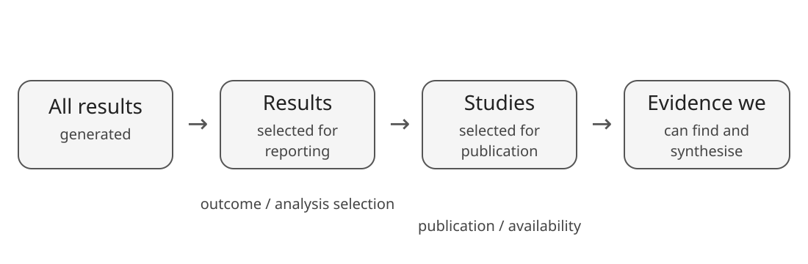
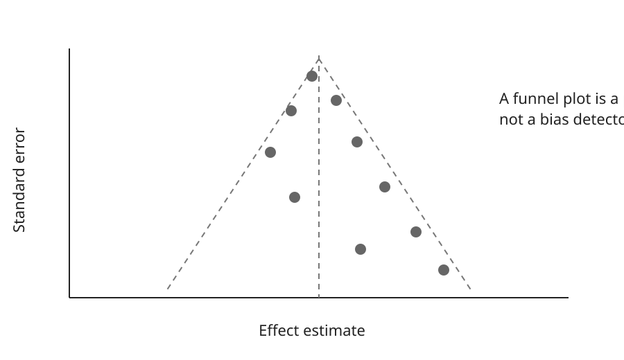

What if the evidence we can see is not the evidence that was generated?
Matthew Grainger
The meta-analysis only sees available evidence

Missingness can occur at the study, outcome, analysis and result level.
Learning objectives
By the end of this module, you should be able to:
distinguish publication bias from broader selective reporting;
explain what funnel plots and small-study-effect tests can and cannot show;
recognise plausible alternative causes of funnel asymmetry;
use diagnostics cautiously in R;
combine statistical diagnostics with review-process information;
communicate uncertainty about missing evidence without claiming it has been “corrected”.
Publication bias is only one mechanism
Study publication Whether an entire study becomes available.
Outcome reporting Which measured outcomes appear in the report.
Analysis reporting Which time points, contrasts or models are shown.
Could availability depend on the direction, magnitude or statistical significance of the result?
Why this matters for meta-analysis
If the probability that an estimate is observed depends on its result, then the observed evidence may not represent the evidence that was generated.
Possible consequences include:
biased pooled effects;
distorted heterogeneity;
misleading moderator relationships;
overconfidence in the apparent evidence base.
A larger meta-analysis is not necessarily a less biased meta-analysis.
Funnel plots: what are they showing?

Asymmetry has many possible causes
selective publication or reporting;
genuine differences between small and large studies;
study quality or design differences;
different interventions, populations or settings;
effect-size/variance relationships;
chance, especially with few studies.
Funnel asymmetry is a clue to investigate, not a diagnosis.
A funnel plot in metafor
m <-rma(yi, vi, data = es, method ="REML")funnel(m)
Before interpreting the picture, ask:
Are there enough independent studies for the pattern to be informative?
Could heterogeneity explain structure in the plot?
Are effect size and precision mathematically related?
Do study characteristics differ with study size?
Small-study effects are not synonymous with publication bias
A regression-based test asks whether effect size is associated with precision or sampling variance.
regtest(m)
A detected small-study effect does not identify its cause.
What does a non-significant test tell us?
Not this:
“There was no publication bias (p > 0.05).”
Better:
“We found no clear evidence of a relationship between effect size and precision, but the analysis has limited ability to rule out selective reporting.”
What about trim-and-fill?
Trim-and-fill can be useful as an exploratory sensitivity analysis, but it relies on assumptions about funnel asymmetry that may not match the actual selection process.
m_tf <-trimfill(m)funnel(m_tf)
Do not describe the filled estimate as the result “corrected for publication bias”.
Start earlier than the statistical diagnostics
Review methods can provide direct clues:
search grey literature and relevant repositories;
compare protocols/registrations with reports where available;
record missing outcomes and unusable results;
contact authors when important data are unavailable;
document conference abstracts and unpublished studies;
consider whether funding or dissemination pathways could affect availability.
Prevention and detection begin with the search and extraction process.
Triangulate, do not tick a box
A useful assessment combines:
Review-process evidence What appears to be missing?
Study characteristics Could size and design explain patterns?
Statistical patterns Are small-study effects apparent?
The conclusion is an argument from multiple pieces of evidence.
Reporting example
Smaller studies tended to report larger effects, although study size was also associated with intervention duration and setting. Funnel-plot asymmetry and regression diagnostics therefore cannot be attributed uniquely to selective publication. Searches identified several reports with incomplete outcome information. We consider selective reporting a plausible source of bias and interpret the pooled estimate cautiously.
Take-home message
Ask what could be missing
→
Investigate the reporting process
→
Use diagnostics cautiously
→
Triangulate + report uncertainty
No funnel plot, test or adjustment can prove that the observed evidence is complete.